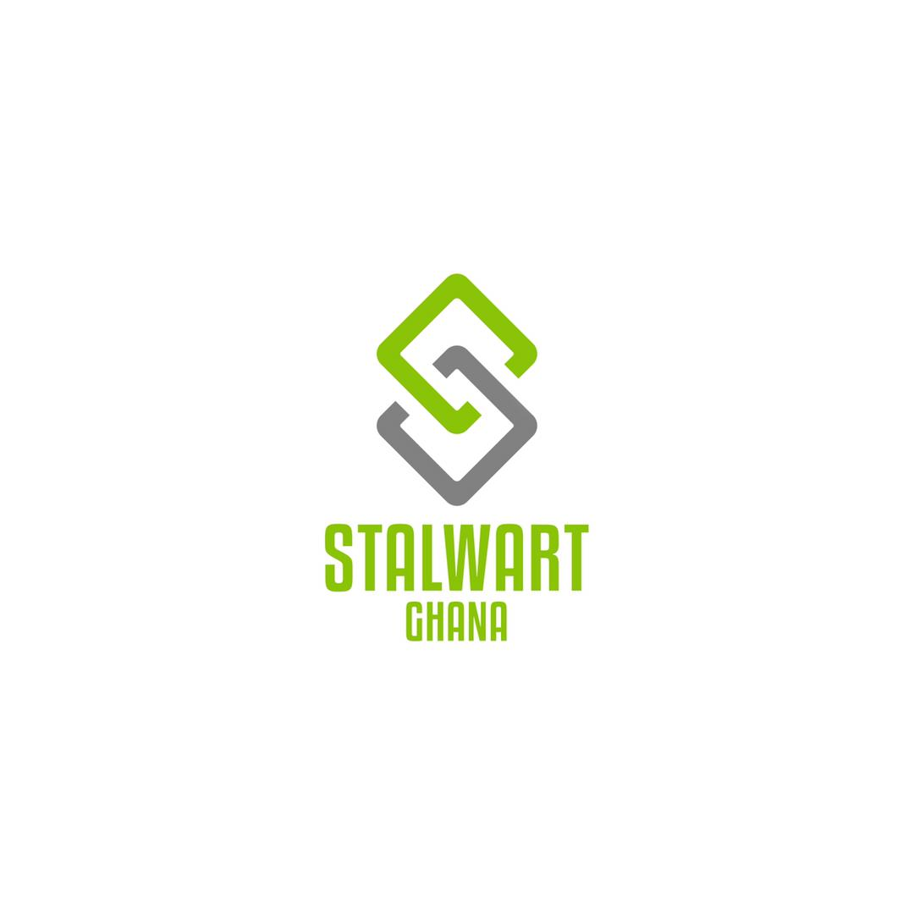
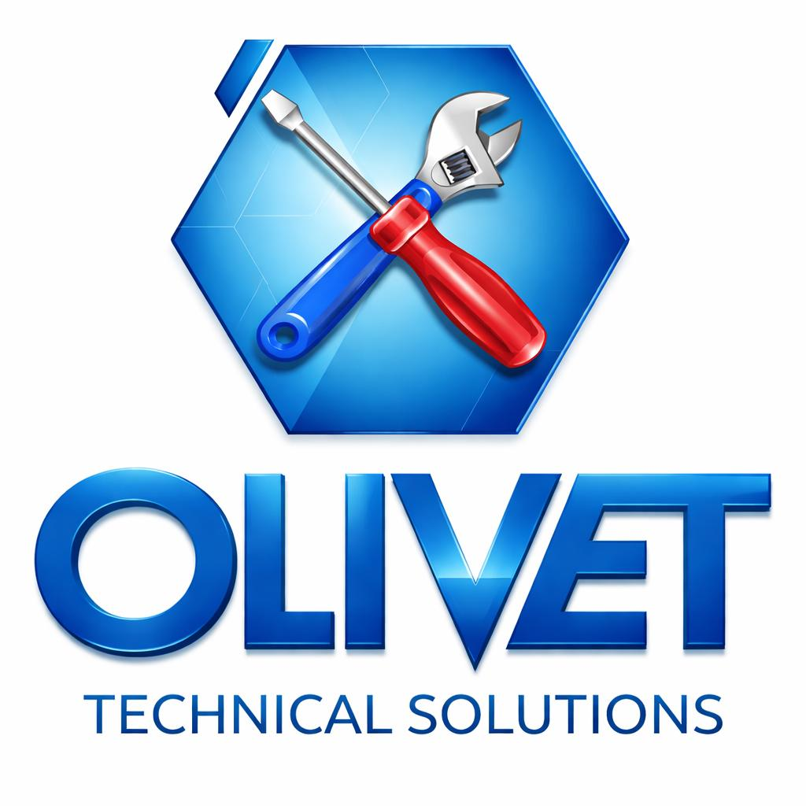

How to build a secure hybrid cloud platform
Practical steps to design networks, enforce policy and enable secure developer workflows.
From secure cloud foundations to AI-driven operations, Paragon IT delivers the infrastructure, software and strategy behind modern industry leaders.
Explore Platform Services →Comprehensive IT solutions crafted to accelerate digital transformation and secure your infrastructure.
Custom enterprise software, scalable apps, and modern DevOps pipelines. We build future-proof systems.
Proactive monitoring, helpdesk, and full lifecycle management — keep your business running smoothly.
AWS, Azure, GCP expertise. Migration, optimization, and serverless architectures for agility.
Threat detection, compliance, zero-trust frameworks and 24/7 security operations.
Design, deployment, SD-WAN, and resilient on-prem/ hybrid network solutions.
Data warehousing, BI dashboards, real-time analytics & data governance.
Strategy-led modernization, process automation, and change management.
Unified comms, VoIP, SIP trunking and managed connectivity for hybrid work.
Generative AI, computer vision, LLM integration and intelligent automation.
IoT enablement, edge computing and RPA to unlock new operational efficiencies.
Paragon IT unifies software, cloud, security, data and networks under one roof — delivering measurable business outcomes.
Learn more →ISO 27001
Certified99.99%
SLA UptimeTurnkey platforms and repeatable architectures that scale across cloud, edge and on-premise environments.
Migration, FinOps, and cloud-native re-architecture to reduce costs and accelerate delivery.
End-to-end security architectures, identity-centric controls and continuous compliance.
Production-ready data lakes, MLOps pipelines, and LLM integrations for actionable intelligence.
24/7 platform operations, observability, and SRE practices to keep systems resilient.
Expert analysis, practical playbooks and case studies to inform your technology roadmap.
Practical steps to design networks, enforce policy and enable secure developer workflows.
Techniques to optimize workloads, right-size resources and implement cost-aware architectures.
Governance, prompt engineering, and secure data flows for generative AI adoption.
Selected organizations we provide infrastructure, security, data and AI services to.




Partner with Paragon IT — where innovation meets reliability. Get a custom roadmap for your business.